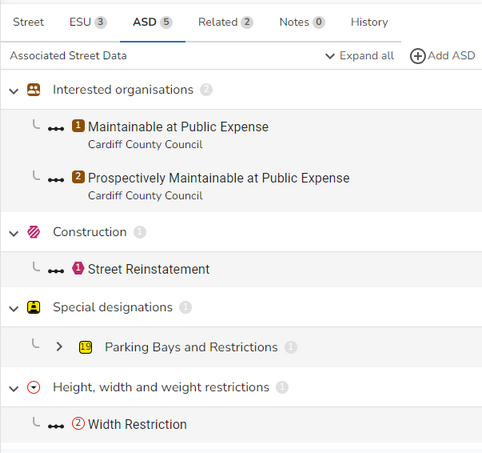

(England & Wales only)
All the details associated with the Associated Street Data (ASD) for a street are displayed when you click on the ASD tab of the Street form. Note: You can click Expand all to show all of the records or just click on a type to expand that particular type of ASD.

Associated Street Data details are split into five categories:
(England & Wales only) The Interest record (Type 61) is used to supply information on organisations who have an interest in the street. Multiple Interest records are only allowed against a single street (with one USRN) where:- 1.Other authorities have an interest in that street 2.The street has separate parts, each having a different Street Authority, a different Operational District within a Street Authority of a different Street Status. Notes: •There should be at least one Interest record for every Type 1 or Type 2 street. •Interest records are only allowed on a Type 1 or Type 2 street. Interest details are displayed on the ASD tab of the Street form. RecordSequential number for each Interest record for a street displayed at the top of the form e.g. (1 of 1). Street statusThe Status of the street as defined within the Street Maintenance Responsibility table. Interested organisationThe Authority which has an Interest in the Street. Interest typeThe nature of the interest that the selected organisation has in the street. DistrictThe Operational District within the Authority that has an Interest in the Street. Maintaining organisationThe Street Authority that is legally responsible for maintaining the Street where this is not the Local Highway Authority. E.g. TfL, Highways England, Welsh Assembly Government etc. Start dateThe date when the record started. End dateThe date when the record ends. Applied toIndicates whether the information applies to the Whole road or Part of road. If Part of road is selected then the following extra information is required. Specify locationIf you have specified Part of road then you need to enter a description of the location of the part or parts of the street for which this Interest is applicable. ASD geometryIf you have specified Part of road then you need to draw the geometry for the location of the part or parts of the street for which this Interest is applicable, using the drawing tools. |
(England & Wales only) The Construction record (Type 62) is used to supply reinstatement categories for a street. A street may have more than one Construction record if it has multiple carriageway designations or if it has both carriageway and footway designations. Notes: •There should be at least one Construction record for every Type 1 or Type 2 street. •Construction records are only allowed on a Type 1 or Type 2 street. Construction details are displayed on the ASD tab of the Street form. RecordSequential number for each Construction record for a street displayed at the top of the form e.g. (1 of 1). Construction typeThe Type of Construction that the record applies to. Reinstatement typeThe Reinstatement Type as defined in the Specification of the Reinstatement of Openings in Highways [SROH] codes of practice. Aggregate abrasion valueThe Aggregate Abrasion Value as defined in the SROH codes of practice. Note: This selection is filtered by the entries valid for your selection of Reinstatement Type. Polished stone valueThe Polished Stone Value as defined in the SROH codes of practice. Note: This selection is filtered by the entries valid for your selection of Reinstatement Type. Frost heave susceptibilityIf this entry is Yes then it is susceptible to frost heave. Stepped JointIf this entry is Yes then it is a Stepped Joint. DescriptionA description providing additional Construction information for certain definitions. OrganisationThe Highway Authority which must be consulted about the Construction. DistrictThe Operational District of the Highway Authority which must be consulted about the Construction. Start dateThe date when the record started. End dateThe date when the record ends. Applied toIndicates whether the information applies to the Whole road or Part of road. If Part of road is selected then the following extra information is required. Specify locationIf you have specified Part of road then you need to enter a description of the location of the part or parts of the street for which this Construction Type is applicable. ASD geometryIf you have specified Part of road then you need to draw the geometry for the location of the part or parts of the street for which this Construction Type is applicable, using the drawing tools. |
(England & Wales only) The Special Designation record (Type 63) is used to supply special designations that apply to a street. There may be none, one or more than one such designation for a street. Notes: •Special Designation records are only allowed on a Type 1 or Type 2 street. •A road may have no special designations applying to it but equally may have several. Special Designation details are displayed on the ASD tab of the Street form. RecordSequential number for each special designation information record for a street displayed at the top of the form e.g. (1 of 1). TypeThe type of special designation to which the record applies e.g. Traffic Sensitive, Protect Street etc. OrganisationThe Street Authority which must be consulted about the Special Designation. DistrictThe Operational District for the Street Authority which must be consulted about the Special Designation. DescriptionDescription providing additional information. PeriodicityThe periodicity of the restriction e.g. Everyday, Weekly, Working days only etc. Operational timesThe Start and End times to which the special designation applies (if it has a specific time period). Operational datesThe Start and End dates to which the special designation applies (if it is seasonal). Start dateThe date when the record started. End dateThe date when the record ends. SourceA brief textual summary of the department / function and / or organisation that is the source of this data. Applied toIndicates whether the information applies to the Whole road or Part of road. If Part of road is selected then the following extra information is required. Specify locationIf you have specified Part of road then you need to enter a description of the location of the part or parts of the street for which this Special Designation is applicable. ASD geometryIf you have specified Part of road then you need to draw the geometry for the location of the part or parts of the street for which this Special Designation is applicable, using the drawing tools. |
(England & Wales only) The Height Width & Weight Restriction [HWW] record (Type 64) is used to supply restrictions for a street such as a weight restriction. A street may have more than one of this type of record or none at all. Notes: •Height Width & Weight Restriction records are only allowed on a Type 1 or Type 2 street. Height Width & Weight Restriction details are displayed on the ASD tab of the Street form. RecordSequential number for each HWW Restriction record for a street displayed at the top of the form e.g. (1 of 1). TypeThe type of restriction that the record applies to e.g. Weight Restriction. ValueThis is the value in metric for the restriction which can be either metres or tonnes. TROThis is the precise wording of the restriction if it is the result of a Traffic Regulation Order [TRO]. This should include the imperial value of the restriction if specified in the TRO. DescriptionThis is a description providing additional information about the feature. SourceA brief textual summary of the department / function and / or organisation that is the source of this data. OrganisationThe Highway Authority which must be consulted about the HWW Restriction. DistrictThe Operational District of the Highway Authority which must be consulted about the HWW Restriction. Start dateThis is the date which the restriction came into effect. End dateThe date when the record ends. Applied toIndicates whether the information applies to the Whole road or Part of road. If Part of road is selected then the following extra information is required. Specify locationIf you have specified Part of road then you need to enter a description of the location of the part or parts of the street for which this HWW is applicable. ASD geometryIf you have specified Part of road then you need to draw the geometry for the location of the part or parts of the street for which this HWW is applicable, using the drawing tools. |
(England & Wales only) The Public Right of Way (PRoW) record (Type 66) is used to supply the PRoW details for a Type 3 Street. Notes: •PRoW records are only allowed on a Type 3 street. Public Right of Way details are displayed on the ASD tab of the Street form. DedicationThe PRoW Dedication or type of rights of way. For a description of each of these entries see the topic What is a PRoW? StatusThe Status of the PRoW. LocationThe descriptive location of the PRoW as defined in the PRoW Definitive Statement. DetailsThe official Reference of the PRoW designation, followed by descriptive details of the PRoW as defined in the PRoW Definitive Statement. Match to street routeThis indicates whether or not the PRoW follows the exact route described by the ESU. If you select Inexact then you can use the Draw a Polyline tool to draw the geometry. LengthThe length (in metres) of the PRoW. When you select to create a new PRoW this length will be calculated automatically. Promoted routeIf Yes, this route is defined by the Surveying Authority as a recommended/promoted route. Accessible routeIf Yes, this route is defined by the Surveying Authority as an accessible route for elderly and disabled. SourceA brief textual summary of the department/function and/or organisation that is the source of this data. Diversion USRNThe Type 3 Street USRN for the PRoW that is being diverted. This information is only required if you have selected Status = Temporary Diversion. OrganisationThe Surveying Authority which must be consulted about the PRoW. DistrictThe Operational District for the Surveying Authority which must be consulted about the PRoW. Start dateThis is the date when the PRoW came into effect. Relevant start dateThis is the date when the record became Relevant (active) as defined by the legal order. End dateThe date when the record ends. This is only visible if the Status of the PRoW is Extinguished. AccessAccess is permitted for the types of entries selected only. ConsultationThis tabs holds information that is only required if you have selected Status = Under Consultation. ReferenceAny formal reference for the consultation. DetailsA brief summary of the consultation. Start Date The date when consultation starts. Close Date The date when consultation closes. AppealThis tabs holds information that is only required if you have selected Status = Under Consultation. ReferenceAny formal reference for the appeal. DetailsA brief summary of the appeal. DateThe date the appeal was raised. |